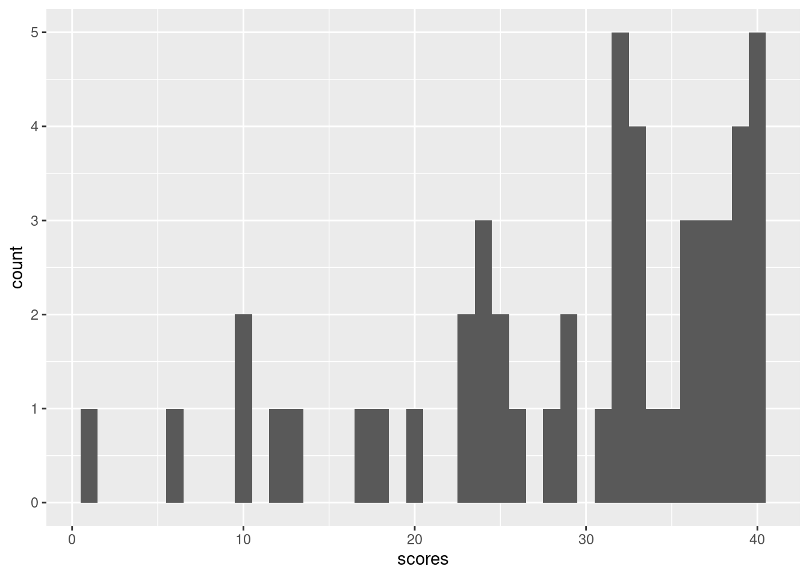
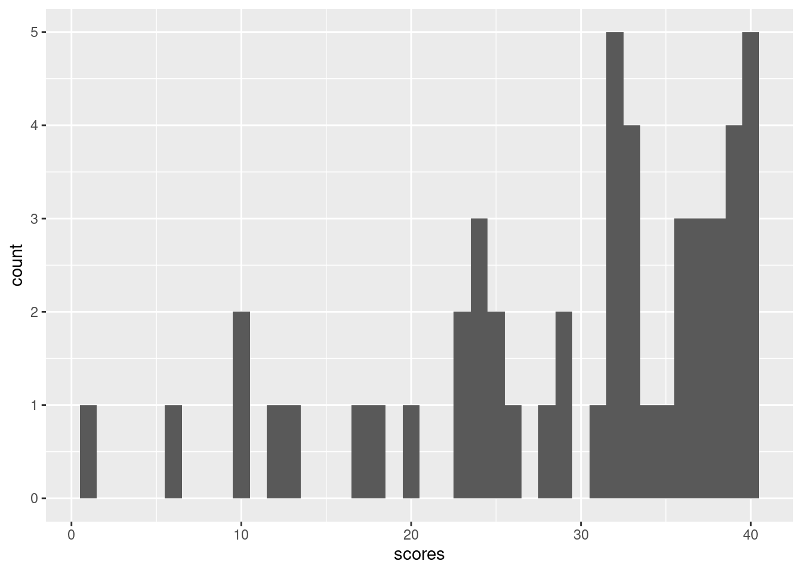

ggplot() + geom_histogram(aes(x=scores), bins=40)
\(\,\)
Let us return again to our sample means problem from the very beginning of class and derive hypothesis tests and confidence intervals. Since sample means are a special case of linear regression, the intuition and techniques will extend readily to the more general case.
Here is a histogram of the final exam scores from last year’s 151A class. There were 50 students, and the maximum score was 40.
ggplot() + geom_histogram(aes(x=scores), bins=40)
Recall that we discussed separating the “innate difficulty of the class” from the “particularities of that particular class” by modeling \(\y_n\) as IID from some population with \(\expect{\y_n} =: \mu\), which we approximate with \(\ybar = \meann \y_n = 29.36\).
We will ask questions like:
The first is like a “hypothesis test” and the second is a “confidence interval.” We will see that a confidence interval is precisely the set of values that a hypothesis test does not reject, and that a confidence interval leads precisely to a set of hypothesis tests that check whether the hypothesis is in the interval.
By the CLT, we know that, whatever \(\mu\) is, for large \(N\), we have approximately \[ \sqrt{N} (\ybar - \mu) = \frac{1}{\sqrt{N}} \sumn (\y_n - \mu) \sim \gauss{0, \sigma^2}, \] where \(\sigma^2 = \var{\y_n}\). In our example, we measured \(\sigma \approx 9.87\) using the sample standard deviation. Today, for simplicity, we will simply assume that this is the true value of \(\sigma\) — i.e., that we know \(\sigma\) and can just use it in our calculations. Later we will deal with the more complicated question of accounting for the uncertainty in \(\sigma\). Similarly, for simplicity, we will uncritically assume that the CLT holds exactly.
Using \(\sigma\) and properties of the normal distribution, we can define the random variable \[ \z := \frac{\ybar - \mu}{\sigma / \sqrt{N}} = \frac{29.36 - \mu}{9.87 / \sqrt{50} } = \frac{29.36 - \mu}{1.4} \sim \gauss{0 ,1}. \] This is called a “z-statistic,” which is a general and not very meaningful name for statistics computed by subtracting a true mean and dividing by a true standard deviation from a random observation.
Since \(\z\) is a standard normal distribution, it seems to characterize the variability of \(\mu\). However, there’s something funny about \(\z\) — as written, you cannot compute it, because you don’t know \(\mu\). In fact, finding what values \(\mu\) might plausibly take is the whole point of statistical inference.
So what good is a z–statistic? Informally, one way to reason about it is as follows. Let’s take some concrete values for an example. Suppose guess that \(\mu^0 = 35\) is the value, and compute
\[ \z = \frac{\ybar - \mu^0}{\sigma / \sqrt{N} } = \frac{29.36 - 35}{1.4} = -4.03 \]
We use the superscript \(0\) to indicate that \(\mu^0\) is our guess, not necessarily the true value.
A value as large as -4.03 is quite unusual under the standard normal distribution. Therefore,
In this way, we might consider it plausible to “reject” the hypothesis that \(\mu = 35\), since otherwise we must accept that we got a very unusual standard normal draw.
There’s a subtle problem with the preceding reasoning, however. Suppose we do the same calculation with \(\mu^0 = 30\). Then \[ \z = \frac{29.36 - 30}{1.4} = -0.46. \] This is a much more typical value for a standard normal distribution. However, the probability of getting exactly -0.46 — or, indeed, any particular value — is zero, since the normal distribution is continuous valued. (This problem is easiest to see with continuous random variables, but the same basic problem will occur when the distribution is discrete but spread over a large number of possible values.)
To resolve this problem, we can specify regions that we consider implausible. That is, suppose we take a region \(R\) such that, if \(\z\) is standard normal, then
\[ \prob{\z \in R} \le \alpha \quad\textrm{form some small }\alpha. \]
For example, we might take \(\Phi^{-1}(\cdot)\) to be the inverse CDF of the standard normal. Then we can take
\[ R_{ts} = \{\z: \abs{z} \ge q \} \quad\textrm{where } q = \Phi^{-1}(1 - \alpha / 2). \] Here, the “ts” stands for “two–sided.” If \(\z \sim \gauss{0,1}\), then
\[ \begin{aligned} \prob{R_{ts}} ={}& \prob{\abs{z} \ge q} \\={}& \prob{\z \ge q \textrm{ or } \z \le -q} \\={}& \prob{\z \ge q} + \prob{\z \le -q} & \textrm{(the regions are disjoint)} \\={}& 2 \prob{\z \ge q} & \textrm{(the standard normal is symmetric)} \\={}& 2 ( 1- \prob{\z < q}) \\={}& 2 ( 1- \Phi(q)) & \textrm{(definition of $\Phi$)} \\={}& 2 ( 1- \Phi(\Phi^{-1}(1 - \alpha / 2))) & \textrm{(definition of $q$)} \\={}& 2 ( 1- (1 - \alpha / 2)) \\={}& \alpha. \end{aligned} \]
Putting our reasoning together, we migth argue that
Although superficially compelling, this reasoning is not watertight, since — as we will now see – there are many regions \(R\) such that \(\prob{\z \in R} = \alpha\) when \(\mu^0 = \mu\), some of which obviously tell us nothing about the true value of \(\mu\).
We can choose other rejection regions. You might be familiar with \[ \begin{aligned} R_{u} ={}& \{\t: \t \ge q \} \quad\textrm{where } q = \Phi^{-1}(1 - \alpha) \\ R_{l} ={}& \{\t: \t \le q \} \quad\textrm{where } q = \Phi^{-1}(\alpha). \end{aligned} \]
The “u” stands for “upper” and the “l” for lower.
Furthermore, there are silly options, such as
\[ \begin{aligned} R_{m} ={}& \{\t: \abs{\t} \le q \} \quad\textrm{where } q = \Phi^{-1}(0.5 + \alpha / 2) \quad\textrm{(!!!)}\\ R_{\infty} ={}& \begin{cases} \emptyset & \textrm{ with independent probability } \alpha \\ (-\infty,\infty) & \textrm{ with independent probability } 1 - \alpha \\ \end{cases} \quad\textrm{(!!!)} \end{aligned} \]
The last two may seem absurd, but they are still rejection regions into which \(\z\) is unlikely to fall if it has a standard normal distribution.
Given this, how can we think about \(\alpha\), and about the choice of the region? Recall that
Of course, we don’t “accept” the value of \(\mu^0\) in the sense of believing that \(\mu^0 = \mu\) — if nothing else, there will always be multiple values of \(\mu^0\) that we do not reject, and \(\mu\) cannot be equal to all of them.
So there are two ways to make an error:
By definition of the region \(R\), we have that
\[ \prob{\textrm{Type I error}} \le \alpha. \]
This is true for all the regions above, including the silly ones!
What about the Type II error? It must depend on the “true” value of \(\mu\), and on the shape of the rejection region we choose. Note that
\[ \z = \frac{\ybar - \mu^0}{\sigma / \sqrt{N}} = \frac{\ybar - \mu}{\sigma / \sqrt{N}} + \frac{\mu - \mu^0}{\sigma / \sqrt{N}} \sim \gauss{0, 1} + \frac{\mu - \mu^0}{\sigma / \sqrt{N}}. \]
So if the true value \(\mu \gg \mu^0\), then our \(\z\) statistic is too large, and so on.
For example:
Thus the shape of the region determines which alternatives you are able to reject. The probability of “rejecting” under a particular alternative is called the “power” of a test; the power is one minus the Type II error rate.
Statistics has some formal language to distinguish between the “guess” \(\mu^0\) and other values.
The choice of a test statistic (here, \(\z\)), together with a rejection region (here, \(R\)) constitute a “test” of the null hypothesis. In general, one can imagine constructing many different tests, with different theoretical guarantees and power.
Often in applied statistics, a big deal is made about a single hypothesis test, particularly the null that \(\mu^0 = 0\). Often this is not a good idea. For example, in our testing case, we can very easily reject \(\mu^0 = 0\), since
\[ \z = \frac{29.36 - 0}{1.4} = 20.97 \]
is very very very very unlikely under a standard normal. However, this only means that the tests were not mean zero. We in fact know this with certainty — the test scores must be non–negative, so the only way they could be mean zero if they were all identically zero, which we know to be false, since we observed at least one non–zero test score. So we can reject \(\mu^0 = 0\) with absolute certainty. (Note that the CLT assumption breaks down if \(\mu\) is actually close to zero.)
In fact, in many cases, we do not care whether \(\mu\) is precisely zero; rather, we care about the set of plausible values \(\mu\) might take. The distinction can be expressed as the difference between statistical and practical significance:
For example, suppose that \(\mu\) is nonzero but very small, but \(\sqrt{\hat\v / N}\) is very small, too. We might reject the null hypothesis \(\mu^0 = 0\) with a high degree of certainty, and call our result statistically significant. However, a small value of \(\mu\) may still not be a meaningful effect size for the problem at hand, i.e., it may not be practically significant.
A remendy is confidence intervals, which are actually closely related to our hypothesis tests. Let \(R^c\) denote the complement of \(R\), that is, all values not in \(R\).
Assuming that \(\z \sim \gauss{0,1}\), recall that we have been constructing regions \(R\) of the form
\[ \begin{aligned} 1 - \alpha \le{}& 1 - \prob{\z \in R} \\ ={}& \prob{\z \in R^c} \\ ={}& \prob{\frac{\ybar - \mu}{\sigma / \sqrt{N}} \in R^c}. \end{aligned} \]
We can solve this expression to get a region that \(\mu\) lies in with high probability. For example, with \(\R_{ts}\),
\[ \begin{aligned} 1 - \alpha \le{}& \prob{-q \le \frac{\ybar - \mu}{\sigma / \sqrt{N}} \le q} \\={}& \prob{\frac{- q \sigma}{\sqrt{N}} \le \ybar - \mu \le \frac{q \sigma}{\sqrt{N}}} \\={}& \prob{\ybar - \frac{q \sigma}{\sqrt{N}} \le \mu \le \ybar + \frac{q \sigma}{\sqrt{N}}}. \end{aligned} \]
Taking the region \(I = \ybar \pm \frac{q \sigma}{\sqrt{N}}\), it follows that \(\prob{\mu \in I} \ge 1 - \alpha\). Here, \(I\) is precisely the set of values that we would not reject with region \(R_{ts}\). Note that the interval \(I\) is random (it depends on \(\ybar\)), so from one realization to the next, we expect \(I\) to change. However, the true \(\mu\) will lie in it at least \(1- \alpha\) of the time.
This duality is entirely general:
What have we done?
Over and over for the next few weeks, we’re going to follow these steps, but with linear regressions rather than simple sample means. We will get more complicated statistics, and distributions other than the normal. But all of the reasoning — and in particular the concern about the power of the test — will apply equally.